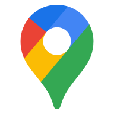
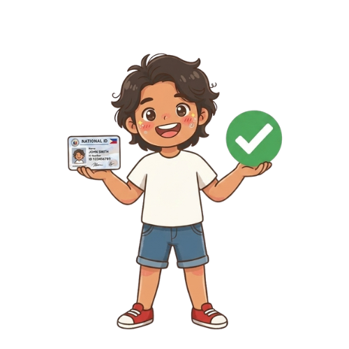

Everything you need, in one friendly app
27+ Philippine government documents and IDs, a context-aware AI assistant, bilingual support, and a mascot to guide you every step of the way.
Document & ID catalog
Browse and fuzzy-search 27 government documents across IDs, clearances, civil registry, and immigration.

AI virtual assistant
Gemini-powered chat with suggested replies, task checklists, and awareness of your guide progress and owned documents.

Nearest office finder
GPS lookup of the closest government agency with interactive maps and turn-by-turn routing via Google Maps.

Document upload & storage
Capture or pick photos of your IDs. Sync to Firebase Storage when signed in, with local caching offline.

Bilingual UI
Full English and Filipino (Tagalog) support across the app, guides, and AI responses.
Speech-to-text search
Dictate document names instead of typing. Ask the AI for help anytime — "Magpatulong sa AI."